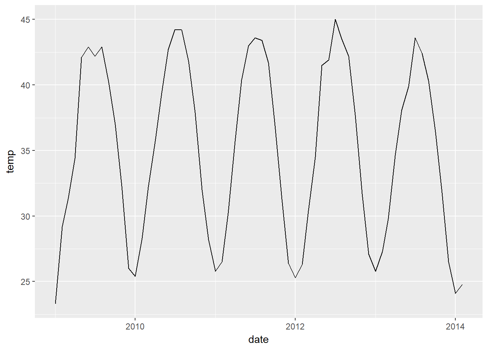

The list of data sets available are shown below. The most important one is GSOM because it facilitates the data acquisition, since it already calculates the average temperature for the month. A lot less computation to do.
datasets <- ncdc_datasets()$data
datasets %>%
select(name, id, mindate, maxdate)It is also possible to get the different stations available. However, it is also possible to specify the lat and lon, or the city.
location <- ncdc_stations(datasetid='GHCND', limit = 20)
location$data %>% select(name, id)Now, the data is downloaded by specifying a station and a period of time. I select the station “GHCND:US1FLSR0004”, located in florida, and obtain data since the year 2009 up to 2018. because the API doesn’t allow to download data for a period longer than 10 years.
out <- ncdc(datasetid='GHCNDMS',stationid = "GHCND:AE000041196", startdate = '2009-01-01', enddate = '2018-01-01', limit = 1000)The variable datatype contains the specific measurement for which data is gathered. The details are found on the following link
I selected Monthly Mean maximum temperature (MMXT), and plot it below per month.
out$data %>%
filter(datatype == "MMXT") %>%
select(date, value) %>%
mutate(date = ymd_hms(date), temp = value/10) %>%
select(-value) %>%
ggplot(aes(x = date, y = temp)) + geom_line()